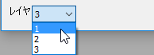
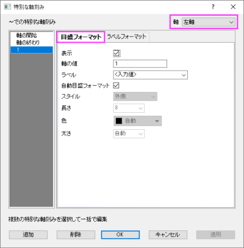
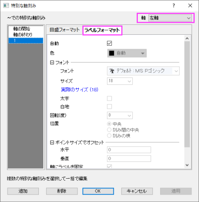

「ラベル」テキストボックスの表現に現在の目盛ラベルの内容を含めるには、%1表記を使います。例えば、現在の目盛ラベルが｢19｣の場合に｢1999｣と表示するには、『ラベル』テキストボックスに%199と入力します。計算式内に現在の目盛ラベルの内容を含めるには、$(x)表記を使います。ここで、xは現在の目盛ラベルの値です。例えば、現在の目盛ラベルが｢99｣の場合、｢1999｣と表示するには、$(1900+x)と入力します。
このタブの設定を使用して、軸の開始または終了、あるいは、指定した位置に特別な軸刻みを追加します。同じオプションを使用するを使用して、特別な軸刻みを複数の軸に同時に追加できます。
複数レイヤのグラフの場合、レイヤリストで設定するレイヤを切り替えます。 
| 下軸と上軸(左軸と右軸)で同じオプションを使用する | このチェックボックスは、現在アクティブなアイコンで更新します。これを使用して、反対側の線についても設定を共有するかを指定します。3Dグラフの場合、 各方向で1つの軸のみを使用 が選択されていない時に、このチェックボックスが利用できます。 |
|---|
現在の特別な軸刻みの設定がこのボックス内に表示されます。
この列では、特別な軸刻みに表示するラベルを指定します。
|
「ラベル」テキストボックスの表現に現在の目盛ラベルの内容を含めるには、%1表記を使います。例えば、現在の目盛ラベルが｢19｣の場合に｢1999｣と表示するには、『ラベル』テキストボックスに%199と入力します。計算式内に現在の目盛ラベルの内容を含めるには、$(x)表記を使います。ここで、xは現在の目盛ラベルの値です。例えば、現在の目盛ラベルが｢99｣の場合、｢1999｣と表示するには、$(1900+x)と入力します。 |
このセルのチェックボックスを使って、同じ行で定義した特別な軸目盛を表示するかどうか指定します。
表示ボックスの下に2つのボタンがあります。
| 削除 | 表示ボックス内に1つ以上の特別な目盛の指定がある時に利用可能です。（軸の開始と軸の終わりは含みません）Ctrlキーを押しながらクリックして複数の特別な軸刻みを選択できます。 |
|---|---|
| 詳細… | 特別な軸刻みダイアログが開き、詳細設定が可能です。 |
このダイアログは、軸ダイアログの特別な軸刻みタブにある、詳細…ボタンをクリックすると開きます。ここで特別な軸刻みの目盛とラベルフォーマットを編集できます。
|
このダイアログを開くと、メインの軸ダイアログは非表示になります。適用ボタンをクリックすると、メインの軸ダイアログに戻ることなく、ダイアログ内のみ変更されます。OKボタンをクリックすると、設定が保存されてダイアログが閉じられます。キャンセルボタンをクリックすると、このダイアログは閉じられて、メインの軸ダイアログを表示します。 |
特別な軸刻みを編集するには、左側の特別な軸刻み位置パネルで編集する刻みを選びます。（複数選択する場合は、Ctrlキーを押しながらクリックします）そして、目盛フォーマットまたはラベルフォーマットタブで設定を変更します。
|  |  |
ダイアログ右上の軸ドロップダウンから軸を選択して、特別な軸刻みについての編集を行う軸を切り替え可能です。
このタブでは、選択した特別な軸刻みの目盛について設定できます。
| 表示 |
予約された特別な軸刻みである軸の開始と軸の終わりについては、ドロップダウンリストで自動、隠す、表示から選択します。自動を選択すると、デフォルトの目盛設定に従います。 ユーザが追加した特別な軸刻みの場合は、チェックボックスで表示または非表示を指定できます。 |
|---|---|
| 軸の値 |
このテキストボックスはユーザが追加した特別な軸刻みでのみ利用可能で、軸上の特別な軸刻みを位置を指定できます。詳細は、上述の軸の値セクションを参照してください。 |
| ラベル |
このテキストボックスは表示を選択した場合のみ利用可能で、特別な軸刻みのラベルを指定できます。詳細は、上述のラベルセクションを参照してください。 |
| 自動目盛フォーマット |
表示にチェックを付けた場合に利用可能で、このチェックボックスにチェックを付けると、その特別な軸刻みが軸と軸目盛タブの設定に従い、これ以下の設定は利用できません。 |
| 目盛のスタイルの設定 |
スタイル、長さ、色、太さの4つの設定が特別な軸刻みの編集のために提供されています。詳細は、Originヘルプの軸と軸目盛タブの項目を確認してください。 |
このタブでは、選択した特別な軸刻みの目盛ラベルについて設定できます。
自動が選択されていると、目盛ラベルのフォーマットタブの設定に従い、これ以下の設定は利用できません。
個別に目盛ラベルを編集するには、自動のチェックを外し、この下のオプションを編集します。詳細は、Originヘルプの目盛ラベルタブの項目を確認してください。
|
フォントのタイプやサイズ、色を簡単に調整するには、特定のラベルの上でクリックし、フォーマット ツールバーにあるボタンを使ってラベルを編集します。 |
さらに、直交座標系の2Dグラフでは、オフセットがある場合、引出線を表示チェックボックスを選択して、特別な軸刻みとラベル間の引き出し線を追加することができます。また、ブランチで引き出し線のフォーマット設定ができます。これらの設定は、「作図の詳細」ダイアログの「ラベル」タブ